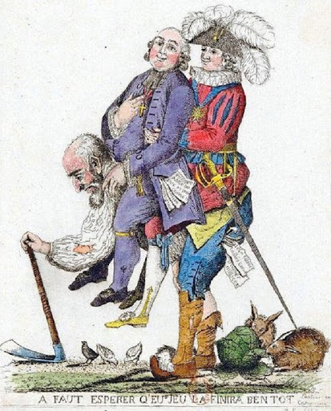

프랑스혁명은 1789년 7월 14일부터 1794년 7월 28일에 걸쳐 일어난 프랑스의 시민혁명입니다. 프랑스혁명은 사상혁명으로서 시민혁명의 전형입니다. 여기서 시민혁명은 부르주아혁명 (계급으로서의 시민혁명)만을 의미하지는 않습니다. 전국민이 자유로운 개인으로서 자기를 확립하고 평등한 권리를 보유하기 위하여 일어선 혁명이라는 보다 넓은 의미를 가지고 있습니다.
프랑스 혁명의 배경 이념은 "계몽사상" 입니다. 계몽사상은 몽테스키외, 루소, 디드로에 의해 약 반 세기에 걸쳐 배양되었습니다. 여기서 프랑스 혁명은 루소의 사상으로부터 가장 큰 영향을 받았습니다. 루소는 문명에 대한 격렬한 비판과 인민주권론을 주장하였는데, 이는 결국 격렬한 프랑스 혁명의 배경 이념으로서 자리잡았습니다.

프랑스대혁명의 주도세력은 제3신분으로 이들은 농민과 시민들이 주요 구성원이었습니다. 그 중 시대의 흐름 속에서 충분한 내공과 실력을 쌓아온 시민계층이 혁명을 주도하였습니다. 귀족과 비견할 정도의 재력, 실력을 가졌지만 제3신분이라는 벽에 가로막혀 사회의 여러 모순점을 겪고 있던 부르주아 계층이 중심이 되어 현 사회의 모순을 타파하고 귀족들의 권한을 모든 국민들에게 확대하자는 취지로 프랑스 대혁명이 발생하였습니다.
루이 16세의 삼부회 소집 → 제 3신분의 머릿수 표결 요구와 제 1,2신분의 거부 → 제3신분의 국민의회 소집 → 바스티유 감옥 습격 → 입법의회 (온건파인 지롱드파 주도) → 국민공회 (급진파인 자코뱅파 주도) → 루이 16세 처형 → 로베스피에르 공포정치 → 4인의 총재정부와 무능한 정치 → 나폴레옹 쿠데타